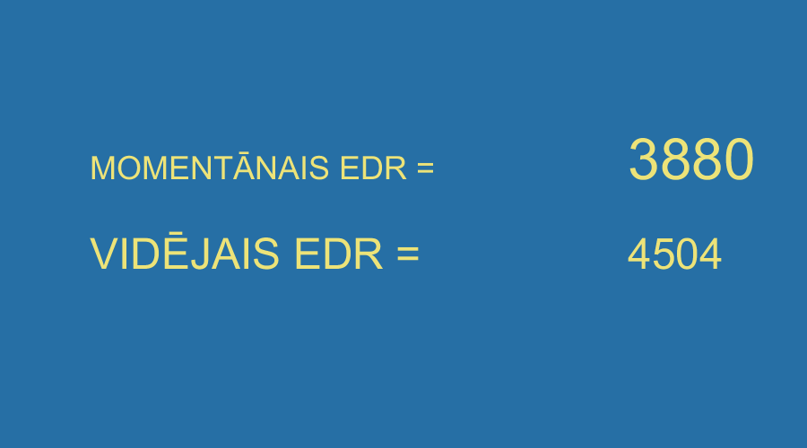

VIENA KANĀLA ELEKTRODERMOGRAMMA
 Elektrodi ir divi, tie abi tiek izvēlēti vienādi, bet, atkarībā no konkrētiem uzdevumiem var būt dažādu izmēru. Šī ir pamatprogramma, kas parāda vidējo EDR pamatlīmeni katru sekundi, un slīdošo vidējo rādītāju par iepriekšējām 30 sekundēm. Vidējais rādītājs der par lielisku atskaites punktu vienkāršās treniņprogrammās ar atgriezenisko saiti, jo ir ļoti ērti vērot momentānā rādītāja attiecības pret šo vidējo, un operatīvi koriģēt savas darbības, piemēram, kontrolēt reālo sasniegto meditācijas procesa dziļumu. Zīmējumā ekrāna attēls šai treniņa programmai:SASKAŅOŠANA AR ALGAL16 SIGNĀLU:
Paredzēta darbībai ar programmu "tiraaedr1000", jo vidējais atbilst 30 nolasījumiem, tātad 30 sek; var izmantot programmu "tiraedr500", tikai tad vidējais būs par 15 sek.
IESPĒJAS:
Taustiņš "1" = izdara atzīmi - ieraksta datu kopā šajā brīdī skaitli "1"
Taustiņš "2" = izdara atzīmi - ieraksta datu kopā šajā brīdī skaitli "2"
Taustiņš "z" = saglabā momentāno ekrāna ainu grafiskā failā; pie kam faila nosaukumu piešķir automātiski, var tātad iegūt tik attēlus, cik tik vēlās.
Taustiņš "b" = izveido 3 jaunus teksta failus (1 - dati tīrā veidā ar zīmēm; 2 - no kļūdām automātiski attīrīti dati ar zīmēm.
3 - no kļūdām automātiski attīrīti dati bez zīmēm). Šos datus var tālāk analizēt ar citām ALGAL16 programmām.